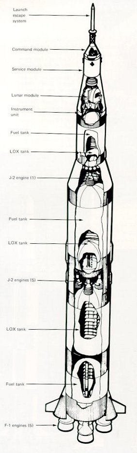

| 
|
The stack: the three-stage launch vehicle, Saturn V,
surmounted by its payload, the Apollo spacecraft.
The greater part of the launch vehicle consists of
tankage for the fuel and for the oxidant, LOX
(liquid oxygen), used in all three Saturn V stages.
The powerful F-1 engines of the first stage burn
kerosene to produce a combined thrust of 7.5
million pounds. The fuel for the J-2 engines of the
two upper stages is liquid hydrogen. The combined
thrust of the second stage's five engines is just over
a million pounds, or five times that of the third
stage's single J-2 engine. Development of the original
hydrogen tanks was difficult because the low
boiling point of hydrogen (-253 °C) required insulation
sufficient to prevent transfer of heat from
the outside and the comparatively warm (-183 °C) liquid oxygen.
|